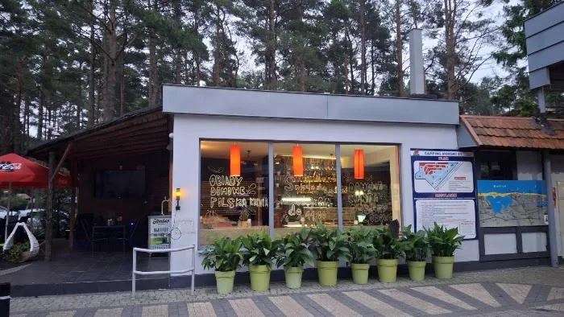
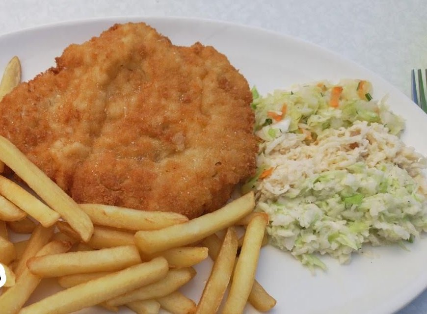

Polska i regionalna kuchnia w sosnowym lesie na Campingu Morskim nr 21 w Łebie — kilka minut spacerem od plaży.
Bar Leśny 2.0 to sezonowa jadłodajnia przy ul. Turystycznej 3 — przy wejściu na Camping Morski nr 21. Na szybie kredą: „Obiady domowe · Polska kuchnia”, w środku pomarańczowe lampy, a przed barem zadaszony taras w cieniu drzew. Przychodzą tu kempingowicze, rodziny wracające z plaży i wszyscy, którzy w Łebie szukają zwykłego, porządnego obiadu.


Bar działa sezonowo — razem z częścią gastronomiczną kempingu, od połowy czerwca do połowy września.
Camping i apartamenty są czynne dłużej niż bar. Poza sezonem warto zadzwonić do recepcji i zapytać.